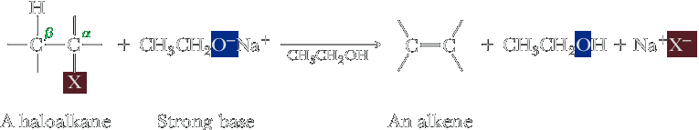
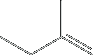
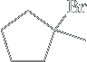

β-elimintation
An elimination reaction occurs when a proton and the leaving group are lost from adjacent carbons, resulting in the formation of a double bond. In general, the reaction can be represented as:

If the carbon bonded to the leaving group is called carbon 1, then the proton is lost from carbon 2. The reaction is therefore termed a 1,2-elimination; Alternatively, because the carbon attached to the functional group is called α-carbon and the adjacent carbon is the β-carbon, the reaction can also be called a β-elimination.
Here, we study a type of β-elimination called dehydrohalogenation. In the presence of base, halogen is removed from one carbon of a haloalkane and hydrogen is removed from an adjacent carbon to form an alkene.
Strong bases promote β-elimination reactions. Strong bases that serve effectively in β-eliminations of haloalkanes are OH−, OR−, NH22−, and acetylide anions. Following are three examples of base-promoted b-elimination reactions. Note that the solvent used is commonly the conjugate acid of the base used in the elimination.
 2-Bromo-2-methylbutane | CH3CH2O−Na+ ⟶ CH3CH2OH |  2-Methyl-2-butene (major product) | + |  2-Methyl-1-butene |
|  1-Bromo-1-methylcyclopentane | CH3O−Na+ ⟶ CH3OH |  1-Methylcyclopentene (major product) | + |  Methylenecyclopentane |
In the second and third illustrations, there are two nonequivalent b-carbons, each bearing a hydrogen; therefore, two alkenes are possible. In each case, the major product of these and most other b-elimination reactions is the more substituted (and therefore the more stable) alkene (Section 6.7B). Formation of the more substituted alkene in an elimination is common, but it is not always the outcome. When the more substituted alkene is the dominant product, the reaction is said to follow Zaitsev’s rule or to undergo Zaitsev elimination.
Mechanisms of β-Elimination
The two limiting mechanisms for β-elimination reactions are the E1 and E2 mechanisms.
In the E1 mechanism, the leaving group departs to give a carbocation; then a proton is taken off an adjacent carbon atom by base to create the product alkene.
E1 reactions are unimolecular because only the haloalkane concentration influences the rate of the reaction.
In the E2 mechanism, the halogen departs at the same time that an H atom is removed by base from an adjacent carbon atom to create the product alkene.
E2 reactions are bimolecular because both the haloalkane and base concentrations influence the rate of the reaction.